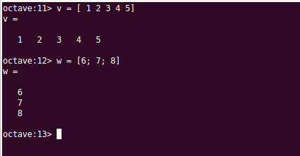

Vectores y Matrices¶
Contents
- Matrices
- Rangos y matrices
- Lectura de las componentes de una matriz
- Direccionamiento indirecto de matrices a partir de vectores
- Eliminación de filas o columnas
- Operaciones con matrices
- Matrices predefinidas
- La función size()
- Inversa, determinante y traza de una matriz
- Funciones max(), min(), sum() y prod()
- Aplicación de funciones a matrices
- Aplicación de operadores lógicos a matrices
- Funciones utilitarias para matrices
Vectores¶
Octave trabaja con vectores de datos, tanto con vectores fila como con vectores columna.
Para definir un vector fila por teclado solo hay que teclear los elementos separados por un espacio o por una coma y encerrados entre corchetes.
Analogamente, un vector columna se define tecleando la lista de elementos separados por punto y coma ‘;‘ o por la pulsación de la tecla intro:
{kind=link}
Rangos¶
En Octave podemos definir un tipo de datos especial, llamado Rango, consistente en una colección ordenada (una serie) de números equiespaciados.
Para definir un rango debemos indicar a Octave el valor inicial del rango, el incremento entre valores sucesivos y el máximo valor que pueden alcanzar los valores de la serie. La construcción para definir un rango coloca los tres valores separados por ‘:‘ :
% rango = inicio : incremento : máximo_valor
rango = 1:2:10
% El resultados será: 1 3 5 7 9
Cuando se omite el incremento, Octave asume que el incremento es la unidad:
% rango = inicio : máximo_valor
rango = 1:4
% El resultado será: 1 2 3 4
Se pueden establecer rangos de valores decrecientes. Para ello el valor de inicio deberá ser mayor que el valor final y el incremento un valor negativo:
rango = 4:-1:0
% El resultado será: 4 3 2 1 0
Para especificar los valores inicio, incremento o máximo de un rango se pueden utilizar funciones, o cualquier otra expresión de Octave que devuelva un resultado válido, por ejemplo:
rango = 0:intmax('uint8')
% El resultado serán los primeros 255 números naturales: rango = 0 1 2 ... 255
rango2 = 0:2:2^3
% El resultado será: rango2 = 0 2 4 6 8
Definición de vectores a partir de rangos¶
Una de las utilizaciones de los rangos es la definición de las componentes de un vector. Veamos un ejemplo. Supongamos que queremos un vector denominado az cuyas componentes sean los ángulos 0, 90, 180, 270. Podríamos definirlo de la siguiente manera:
rango = 0:90:270
az = [rango]
% El resultado será: az=[0 90 180 270]
De hecho, no es necesario definir primero el rango y luego el vector. La manera habitual de hacerlo es definiendo el rango directamente dentro de los corchetes:
az = [0:90:270]
% El resultado será: az=[0 90 180 270]
La función linspace()¶
La función linspace() es también muy útil para definir vectores. Devuelve un vector con n números equiespaciados entre unos números de inicio y final. Los argumentos que se le pasan a la función son el número de inicio de la serie, el número final de la serie y el número total de elementos que tendrá la serie:
% v = linspace( inicio, fin, num_elementos)
v = linspace(1,10,10)
% El resultado será: v=[1 2 3 4 5 6 7 8 9 10]
La función linspace() permite también realizar series descendentes, y también podemos utilizar expresiones válidas de Octave para los parámetros:
w = linspace(10,5,5)
% El resultado será: w=[10 9 8 7 6]
z = linspace(0,pi/2,4)
% El resultado será: w=[0.00000 0.52360 1.04720 1.57080]
Lectura de las componentes de un vector¶
Cuando queramos referirnos a una componente concreta de un vector, utilizaremos el nombre del vector seguido del índice de la componente encerrado entre paréntesis. En Octave, el índice de la primera componente de un vector es el 1. Veamos un ejemplo refiriéndonos al vector definido en el epígrafe anterior az = [0 90 180 270] :
az(1)
% El resultado será: 0
az(2)
% El resultado será: 90
az(4)
% El resultado será: 270
Octave proporciona un truco para extraer la última componente de un vector, sin tener que explicitar el índice, y es utilizar la palabra end. En el ejemplo anterior es equivalente escribir az(4) que az(end):
az(4)
% El resultado será: 270
az(end)
% El resultado será: 270
También podemos definir las componentes a extraer mediante un rango. En el siguiente ejemplo extraemos la segunda y tercera componente del vector az. El resultado de la operación es un vector de dos componentes, [90 180], que se lo asignamos a un nuevo vector que hemos llamado es:
es = az(2:3)
% El resultado será: es=[90 180]
Otro ejemplo de extracción de un rango de componentes de un vector es el siguiente, en el que primeramente definimos un vector v y a continuación extraemos algunas de sus componentes a un nuevo vector W:
v = [1:2:10] % Se define un vector y se asigna a la variable v
% El resultado será: v=[1 3 5 7 9]
w = v(1:2:5) % Se extráen ciertas componentes del vector v que se asignan a w
% El resultado será: w=[1 5 9]
Note
Es importante distinguir entre las sentencias utilizadas para definir un vector, que utilizan corchetes [ ], y las utilizadas para extraer componentes de un vector, que utilizan el nombre del vector seguido de las componentes a extraer entre paréntesis ( ).
Concatenación de vectores¶
Podemos unir dos vectores, esto es, poner las componentes de un vector a continuación de las de otro para formar un único vector. Para ello se definen entre corchetes los elementos a concatenar separados por coma o por espacio. Veamos un ejemplo:
a = [1 2 3];
b = [4 5 6];
c = [a b]
% El resultado será: c = [1 2 3 4 5 6]
Podemos hacer otro tipo de concatenaciones, por ejemplo, concatenar un vector con un rango, o un número con un vector, o un vector con un número. De hecho, cundo definimos un vector tecleando sus componentes, lo que hacemos es concatenar varios números:
a = [1 2 3];
c = [a 5]
% El resultado será: c = [1 2 3 5]
d = [-5:0 a 4:5]
% El resultado será: d = [-5 -4 -3 -2 -1 0 1 2 3 4 5]
d = [-5 -4 -3 -2 -1 0 a 4 5]
% El resultado será: d = [-5 -4 -3 -2 -1 0 1 2 3 4 5]
Se pueden concatenar de manera similar vectores columna. En este caso las distintas subcomponentes se separarán por punto y coma.
Funciones utilitarias para trabajar con vectores¶
Hay varias funciones útiles a la hora de trabajar con vectores. Siendo v un vector:
- length(v) Devuelve el número de componentes del vector v
- max(v), min(v) Devuelve el valor máximo/mínimo de entre las componentes de v
- sum(v), prod(v) Devuelve la suma/producto de las componentes de v
- norm(v) Devuelve el módulo del vector v
- dot(v, w) Devuelve el producto escalar de los vectores v y w
- cross(v, w) Devuelve el vector producto vectorial de v y w (Las dimensiones de v y w deben ser congruentes como máximo tres)
- sort(v) Devuelve un vector con las componentes de v ordenadas de menor a mayor